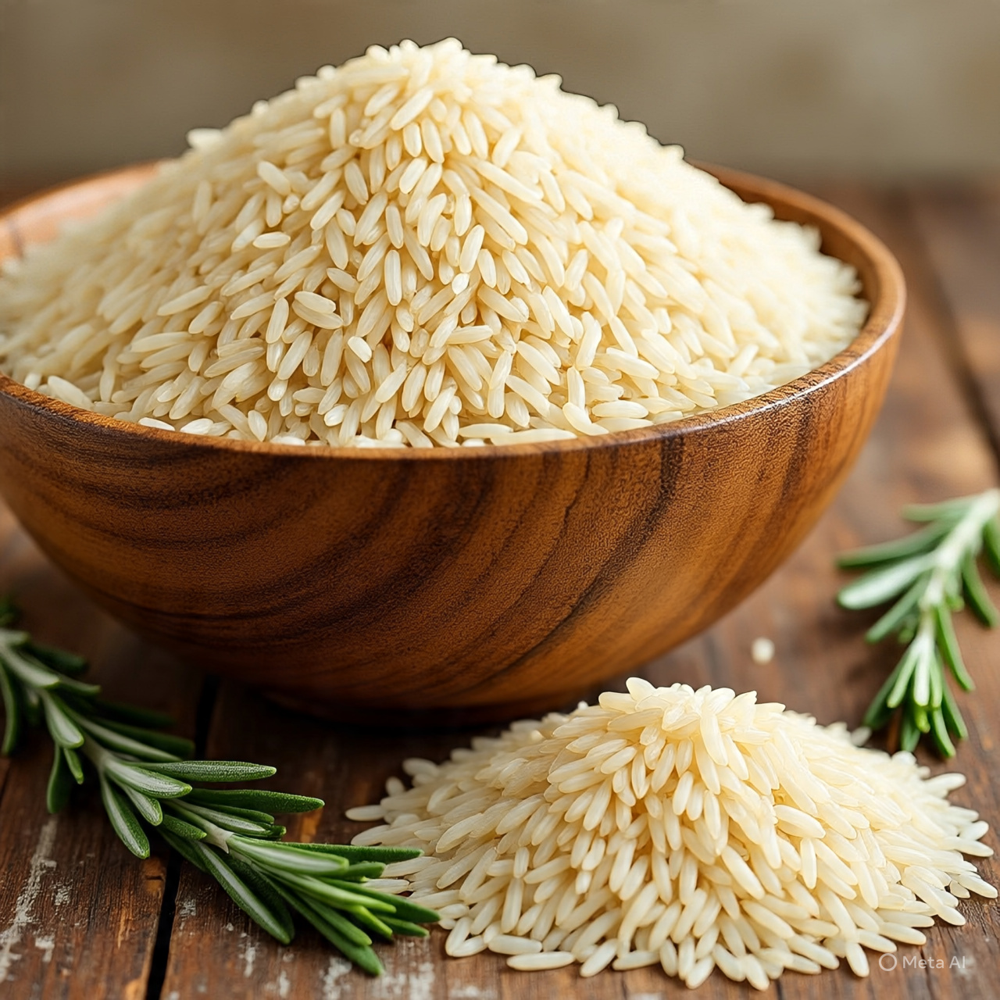
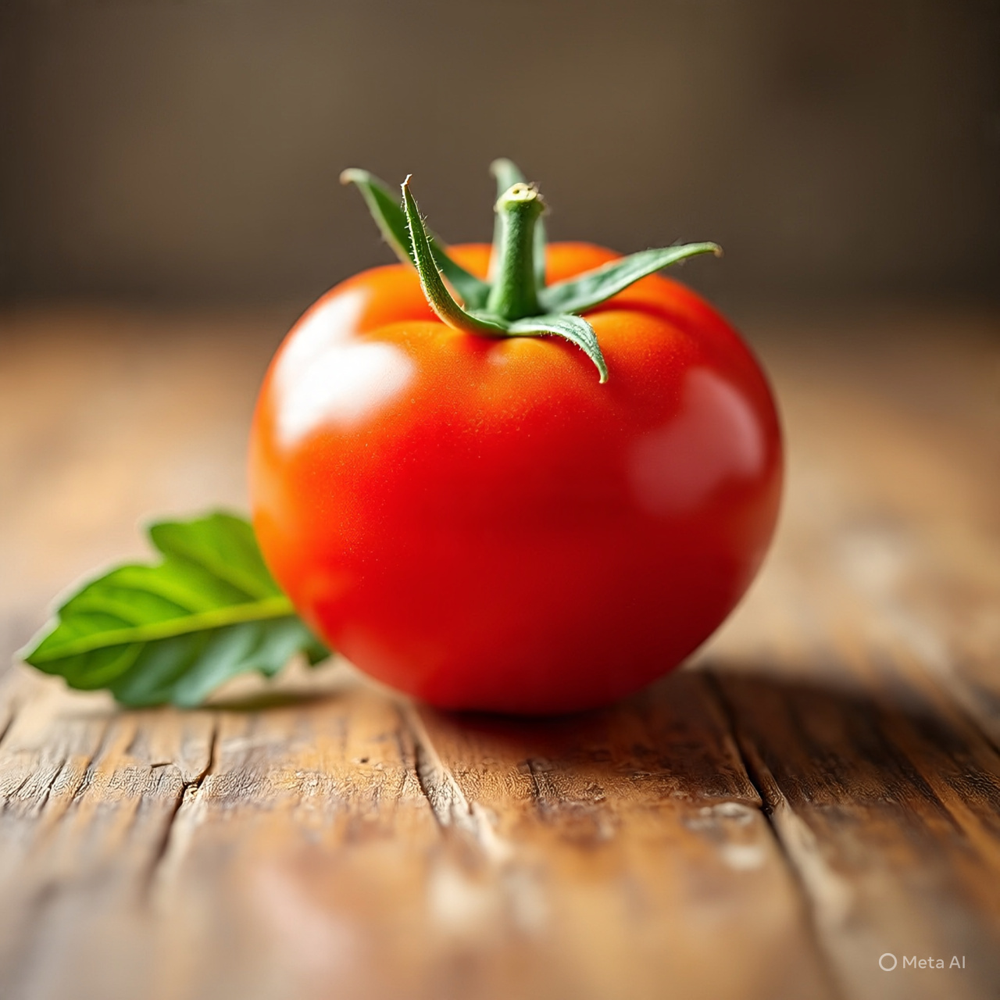
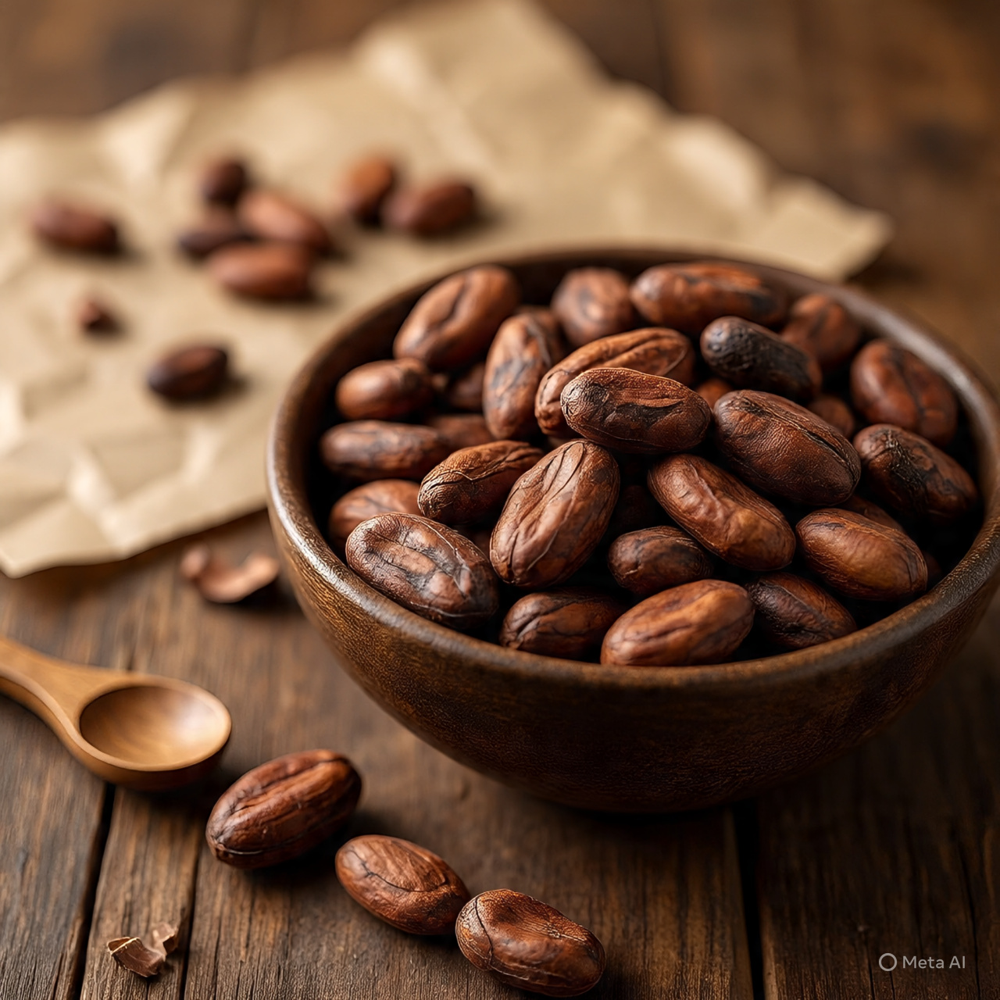
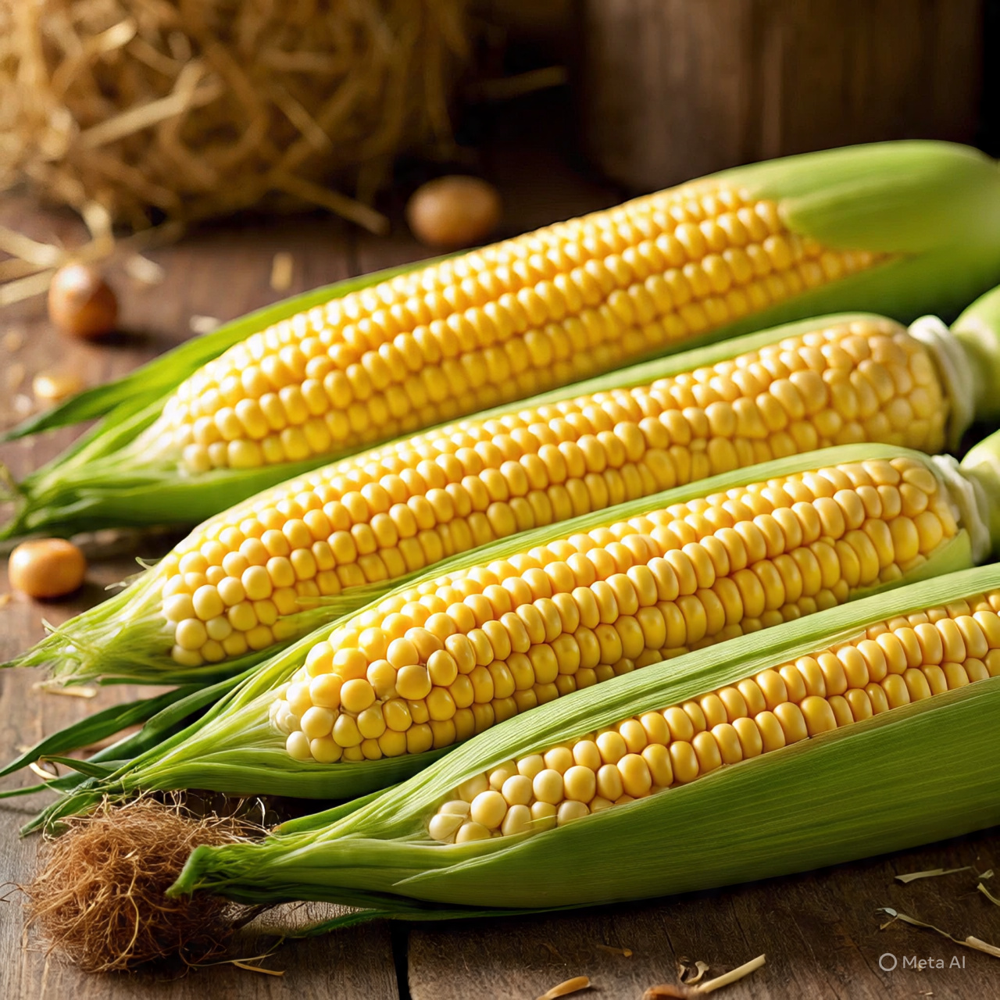
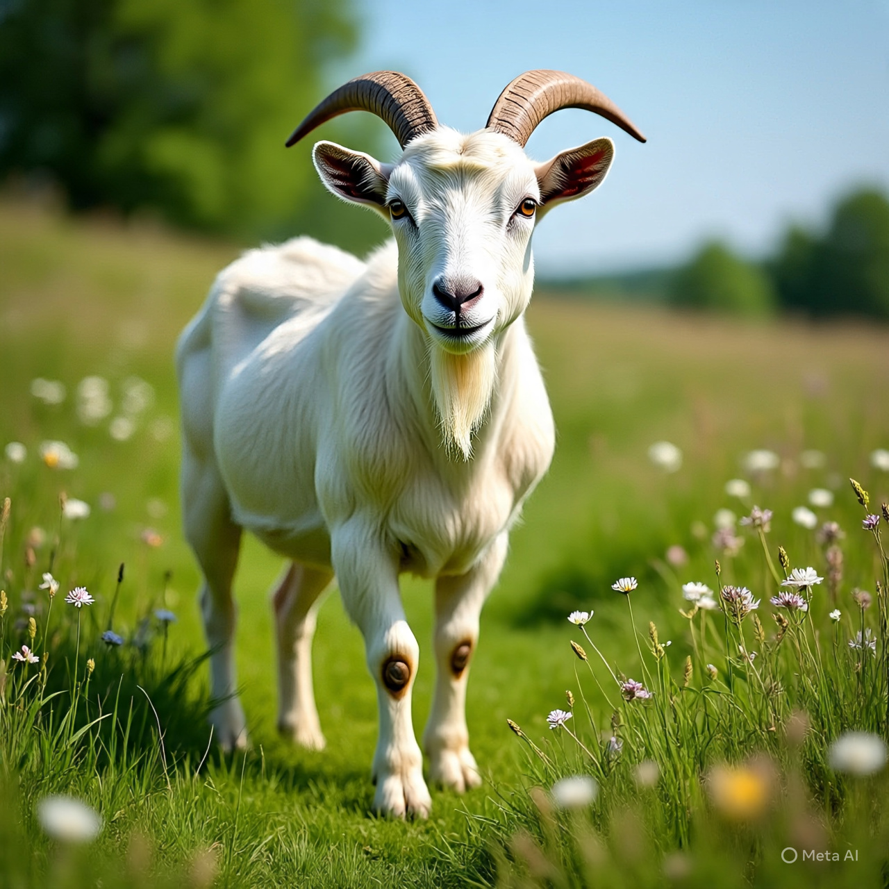
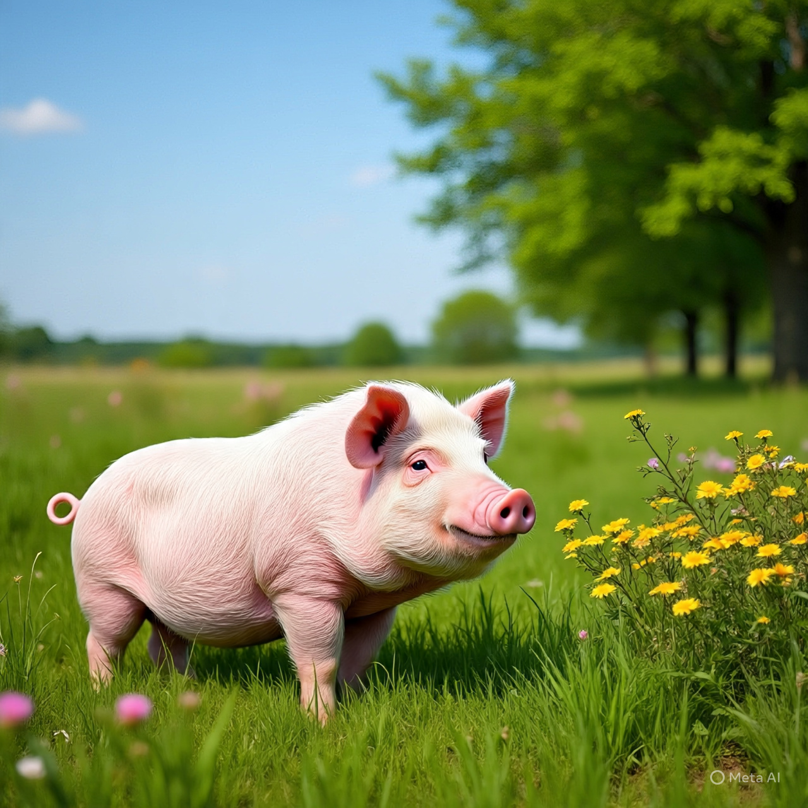
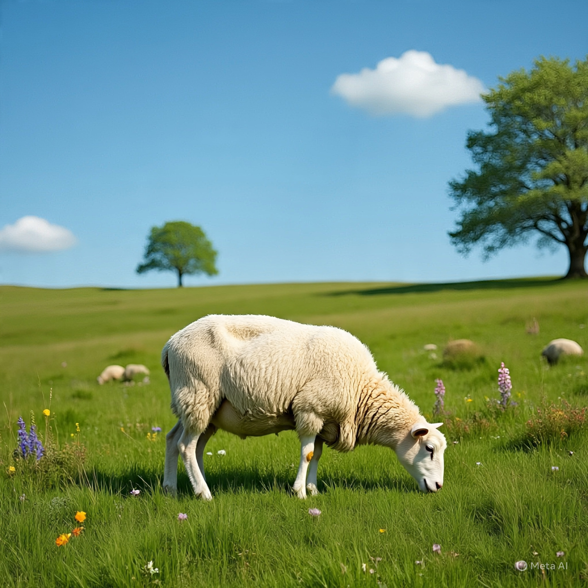

Learn farming -
From seed
to harvest
üåæ Welcome to Agri Kids Adventures!
Where young minds grow with every farm discovery! Start learning about crops, animals, and the amazing world of agriculture!
COMMON CROPS WE GROW

RICE (Oryza Sativa)

TOMATO

COCOA

CORN
FARM ANIMALS AND THEIR PRODUCTS

A COW PRODUCES MILK

A GOAT PRODUCES MEAT / MILK

A PIG PRODUCES MEAT (PORK)

A SHEEP PRODUCES WOOL
Branches Of Agriculture
Agriculture has several branches, including:
- Agronomy (crop production)
- Horticulture (fruits, veggies, flowers)
- Animal Husbandry (livestock)
- Agricultural Engineering (machinery, irrigation)
- Agricultural Economics (farm management)
Growth Stage Of Plants
Plants don't just magically grow, they go through some processes and stages, some of which are:
- Germination: Seed absorbs water, sprouts, and roots grow.
- Seedling: Young plant develops leaves and starts photosynthesis.
- Growth: Plant grows leaves, stems, and roots, increasing in size.
- Flowering:Plant produces flowers, which eventually turn into fruits/seeds.
- Maturity: Fruits/seeds ripen and are ready for harvest.
Growth Stage Of Animals
Animals don't just magically grow, they go through some processes and stages, some of which are:
- Birth:The animal is born
- Neonatal: The newborn animal is dependent on its mother for care.
- Weaning: The animal transitions to solid food.
- Juvenile: The young animal grows and develops, becoming more independent.
- Adolescence: The animal reaches sexual maturity and may start reproducing.
- Adulthood: The animal is fully grown and capable of reproduction.
- Old age: The animal shows signs of aging, such as reduced physical abilities.
"I'm not peeling well"
Goats have accents — somewhere there’s a goat that says “baaah” like it’s from London.
Because it wanted to study moo-sic
Sheep can recognize over 50 faces — and remember them for years!
Lettuce be friends
Cows have best friends and get stressed if they’re apart
"Stop spreading rumors"
A moo-my
Test Your Knowledge with Our Quiz!
Think you know your crops and animals? Test your knowledge with our fun quiz game!
Click the button below to start the quiz and see how much you know about the world of agriculture!
Start QuizReady to challenge yourself? Let’s go!
üåæ Agrikids Quiz Game

Question here